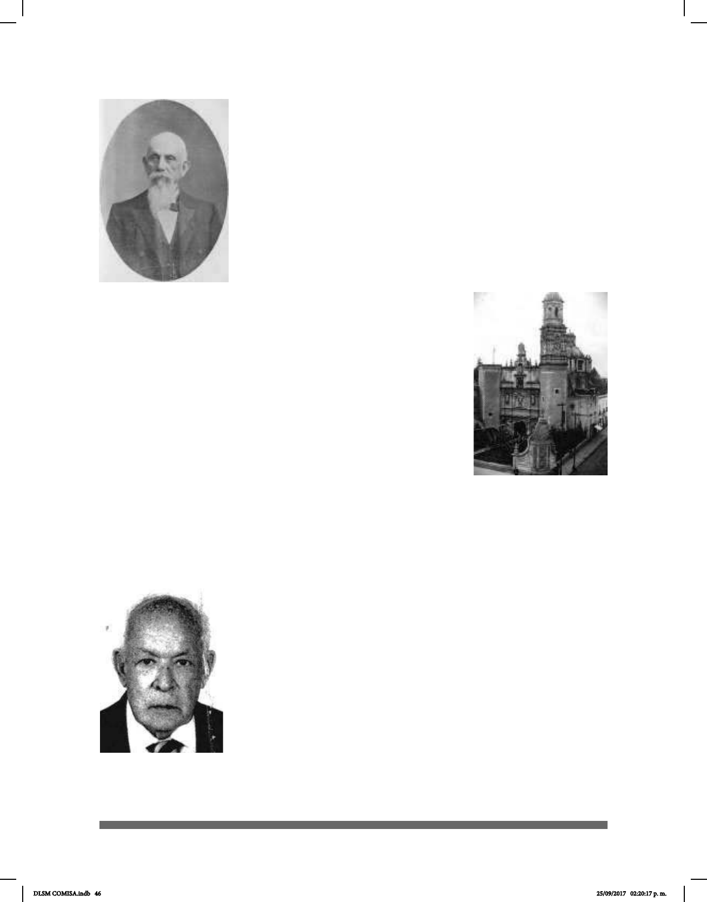

46
En 1893, siendo director de la escuela Don Trinidad García
se permitió la enseñanza por medio de las señas. Estas eran
iniciativas aisladas, pues aún no modicaban la losofía y
objetivos de desmutización y oralización.
En 1905, en la Iglesia de San Hipólito, el sacerdote Camilo
Torrente empezó a impartir el catecismo a un pequeño grupo de
sordos por medio de la lengua de señas. Con el tiempo, estos
estudiantes de la ENS enseñaron la Lengua de Señas Mexicana
(LSM) al padre Rosendo Olleta. Los sacerdotes claretianos
comenzaron a trabajar con la comunidad de personas sordas en
México, instruyéndolos en varios ocios y enseñándoles a leer
y a escribir, además de catequizarlos.
La Ley de Educación Primaria se
promulgó el 15 de agosto de 1908
durante el gobierno del General Porrio
Díaz, en ella se enfatizó la importancia de dar educación
primaria y enseñanza de ocios a sordomudos.
En 1925 se adaptó en el antiguo Colegio de Teresitas, un centro
destinado a la atención de ciegos y sordomudos gracias a la
Benecencia Pública, y se inauguró en agosto de 1928.
En ese año fueron trasladados alumnos ciegos al edicio de
Corpus Christi, junto a los alumnos sordos, y en octubre del
mismo año fue publicada el acta de inauguración, en la cual se
señaló que el edicio estaría ubicado en la calle de Mixcalco
No. 6. La supercie aproximada del predio ocupado por dicho
edicio era de 2,400 m2.
El padre Rosendo Olleta brindó un gran impulso al trabajo dentro de la comunidad de
su iglesia ya que en 1929 impartió clases para enseñar a escribir, contar, hablar, rezar
y algún ocio; también se le atribuye la construcción del primer
Colegio Católico para Sordomudos y se suspendió la obra dada
su muerte.
El sacerdote Manuel Fierro continuó con su obra en 1955 y
fundó la Escuela academia para Sordomudos Rosendo Olleta.
En 1961, el sacerdote Ángel Alegre Conde construyó el hoy
conocido Instituto Rosendo Olleta (IRO) y desde entonces la
enseñanza empleó la LSM como parte fundamental del proceso
de enseñanza- aprendizaje y dejó de ser solamente oralista.
A principios del año de 1920, Don Ignacio Sierra “El líder
Sordo” (1907-1993) entró por primera vez a la Escuela Nacional
de Sordomudos. Ahí empezó a mejorar su comprensión y a
Don Trinidad García,
Director de la Escuela
Nacional de Sordomudos.
Iglesia de San Hipólito
Don Ignacio Sierra
DLSM COMISA.indb 46 25/09/2017 02:20:17 p. m.